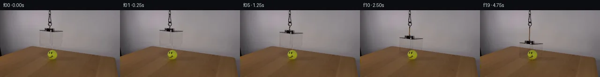

![首帧]()

Round 00
2026-11-05T10:35:35.648960+00:00像素候选变化代码 +238/−0inspection 更新
pixels 57d4d9e0cc38542d · code 8974cc423da03794
查看本轮 generate.py 真实 diff
--- previous/generate.py
+++ current/generate.py
@@ -0,0 +1,238 @@
+"""Photographic pixel continuation using only the supplied first frame.
+
+No generative model, renderer, external asset, or image-viewing API is used.
+"""
+from pathlib import Path
+import hashlib
+import json
+
+import numpy as np
+from PIL import Image, ImageDraw, ImageFilter
+from scipy.ndimage import gaussian_filter, map_coordinates
+
+from artifact_io import save
+
+ROOT = Path(__file__).resolve().parent
+W, H = 256, 144
+SS = 8
+Y, X = np.mgrid[:H, :W].astype(np.float64)
+
+
+def polygon_mask(vertices, feather=0.0):
+ img = Image.new('L', (W * SS, H * SS))
+ ImageDraw.Draw(img).polygon(
+ [(round(x * SS), round(y * SS)) for x, y in vertices], fill=255
+ )
+ if feather:
+ img = img.filter(ImageFilter.GaussianBlur(feather * SS))
+ return np.asarray(img.resize((W, H), Image.Resampling.LANCZOS), dtype=float) / 255.0
+
+
+def line_mask(vertices, width=1.0, blur=0.0):
+ img = Image.new('L', (W * SS, H * SS))
+ ImageDraw.Draw(img).line(
+ [(round(x * SS), round(y * SS)) for x, y in vertices],
+ fill=255, width=max(1, round(width * SS)), joint='curve'
+ )
+ if blur:
+ img = img.filter(ImageFilter.GaussianBlur(blur * SS))
+ return np.asarray(img.resize((W, H), Image.Resampling.LANCZOS), dtype=float) / 255.0
+
+
+def sample(field, sx, sy, fill=0.0):
+ if field.ndim == 2:
+ return map_coordinates(field, [sy, sx], order=1, mode='constant', cval=fill)
+ return np.stack(
+ [map_coordinates(field[..., c], [sy, sx], order=1,
+ mode='constant', cval=fill) for c in range(field.shape[2])], axis=-1
+ )
+
+
+def displacement(frame):
+ u = np.clip((frame - 1) / 16.0, 0.0, 1.0)
+ return float(27.0 * u * u * (3.0 - 2.0 * u))
+
+
+def cleaned_plate(original):
+ # Local source wall samples follow the tabletop's sloping rear boundary.
+ # This alignment avoids spreading table colors into the uncovered wall.
+ slope = 0.142
+ left = np.zeros_like(original)
+ right = np.zeros_like(original)
+ left_columns = [78., 79., 80., 81., 82.]
+ right_columns = [137., 138., 139., 140., 141.]
+ for col in left_columns:
+ left += sample(original, np.full_like(X, col), Y + slope * (col - X)) / len(left_columns)
+ for col in right_columns:
+ right += sample(original, np.full_like(X, col), Y + slope * (col - X)) / len(right_columns)
+ weight = np.clip((X - 80.0) / 59.0, 0.0, 1.0)
+ wall = (1.0 - weight[..., None]) * left + weight[..., None] * right
+ # Only a local, softly bounded footprint is reconstructed. The full ball,
+ # table, upper suspension, and all surrounding pixels stay in the plate.
+ box = polygon_mask([(82.8, 41.4), (135.4, 43.4), (133.8, 75.7),
+ (111.4, 83.0), (82.8, 76.3)], feather=0.38)
+ mount = polygon_mask([(93.4, 38.1), (102.6, 37.3), (105.3, 36.7),
+ (109.0, 37.1), (117.6, 39.0), (117.5, 48.4),
+ (93.5, 46.9)], feather=0.3)
+ footprint = 1.0 - (1.0 - box) * (1.0 - mount)
+ plate = original * (1.0 - footprint[..., None]) + wall * footprint[..., None]
+ # Optical transfer reproduces the photographed rim, attachment, clear
+ # panels, seams, and highlights exactly before resampling. A ratio retains
+ # the destination's ball and wood colors when the panels cross them.
+ optical_delta = original / np.maximum(plate, 1.0) - 1.0
+ optical_delta[np.abs(optical_delta) < 0.000001] = 0
+ return plate, optical_delta, footprint
+
+
+def shadow_field(d):
… diff truncated; 151 more lines …